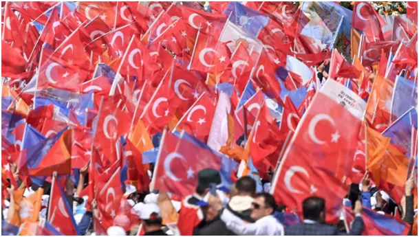

Turcja 2023, wybory stulecia.
Turcja to dla Europy zagadkowy i trudny partner. Po I Wojnie Światowej na ruinach Imperium Osmańskiego powstała Republika Turecka. Turcy w takcie tej wojny zadali ciężkie straty flocie brytyjskiej i francuskiej, ale stracili swoje terytoria poza Półwyspem Anatolijskim, w tym Palestynę i południowe Bałkany. Pomni swej porażki u boku Niemiec nie przystąpili do II Wojny Światowej i pozostali neutralni. W latach 40-stych balansowali między zachodem i ZSRR, aby w 1952 dołączyć do NATO. Masowa, legalna emigracja turecka przyśpieszyła odbudowę Niemiec i miała bardzo istotny wpływ na przemiany społeczeństwa niemieckiego czyniąc je multi-kulturowym. Tureccy emigranci uczynili przemysł niemiecki bardzo konkurencyjnym. W 2003 roku na scenę polityczną wchodzi obecny prezydent Recep Tayyip Erdoğan jako premier, a od 2014 jako prezydent. W 2018 w referendum zdobywa poparcie i zmienia ustrój polityczny kraju na system prezydencki. Systemy z jednoosobowym przywództwem w różnej formie mamy wśród liderów światowej polityki: USA, Niemcy, Francja, Wielka Brytania mają właśnie takie ustroje, co czyni je sprawnymi i niesterowalnymi z zewnątrz.

Turcja od kilkunastu lat prowadzi z roku na rok coraz bardziej niezależną politykę. Samodzielnie interweniuje w konflikty w Azji i Afryce, najczęściej na przekór interesom państw zachodnich, odgrywa bardzo ważną rolę w rozwoju chińskiego "Jedwabnego Szlaku", prowadzi bardzo intensywną współpracę gospodarczą i techniczną zarówno z Rosją, jak i Ukrainą, rozwija najnowsze technologie kosmiczne i militarne. Turcja konkuruje z Arabią Saudyjską i Iranem o przywództwo w świecie islamu.
Dziś, 14 maja 2023, odbywają się wybory prezydenckie i parlamentarne, przez media nazwane wyborami stulecia. Armia turecka jest drugą siłą w NATO i w regionie jako jedyna jest w stanie przeciwstawić się dowolnej armii, a pamiętajmy, że Bliski Wschód to centrum importu broni od 50. lat. Iran, Arabia Saudyjska, Egipt, Izrael to militarne potęgi a delikatna równowaga tych sił to pokój i przyszłość dla chińskiej ekspansji na zachód. Jeśli dziś, któraś z partii lub kandydatów przekroczy 50% poparcia dowiemy się, co dalej w tym tak ważnym dla naszego regionu kraju. Wszystko wskazuje, że będzie druga tura, ale wieczorem zaczną się publikacje wyników cząstkowych. Jeśli jak w latach poprzednich Turcy będą zliczać głosy on-line, na oczach świata, będziemy mieli sporo emocji, jak na meczu Azja : Ameryka. Europa po cichu kibicuje Turcji, bo Turcja ma potencjał stać się tanią montownią dla niemieckiego przemysłu wysokich technologii.
Zostajemy w nasłuchu: Hala halo Turcjo ! Dokąd zmierzasz ? Wybory on line tu:
Paweł Klimczewski